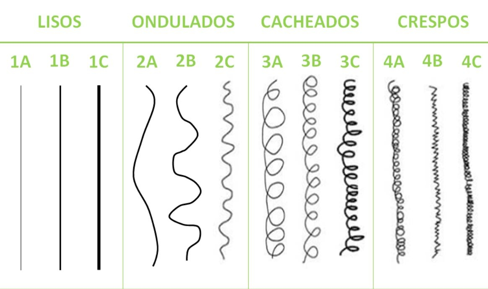
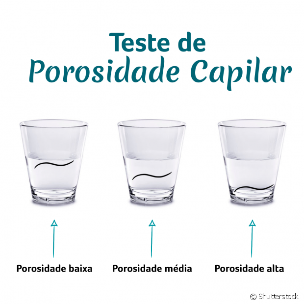
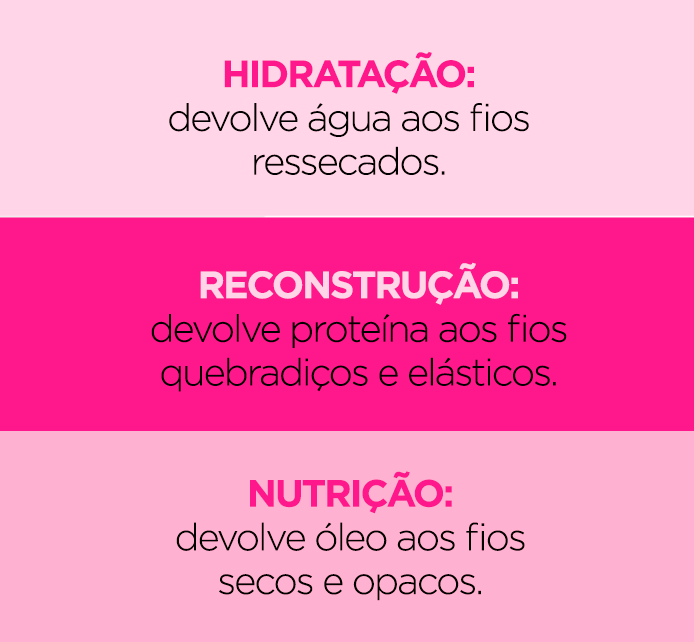

Para começar, quero que voce entenda sobre o seu cabelo, qual o seu tipo de fio? Ainda nõa sabe?. Segue imagem dos tipos de fio:
Os fios do tipo 1 são...
Os fios do tipo 2 são...
Os fios do tipo 3 são...
Os fios do tipo 2 são...
Identificou qual o seu fio?
Voce nunca fez essa tecnica? Ela é seguinte: Consiste em tirar um fio e coloca-lo na agua....
Entenda um pouco mais do que se trata cada um....
